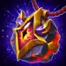

Kendle Guide: Pain Mage Relic & Best Teams for Hero Wars Alliance
- By: Alexandre Domingos. .
Welcome, Champion! Have you ever imagined a hero who turns pain itself into devastating destruction — burning herself and her allies to unleash unstoppable pure damage that bypasses every armor and magic defense in the game? Meet Kendle, the fiercely masochistic mage of the Way of Chaos. She tortures herself and her allies, converting every drop of sacrificed health into explosions of pure damage that no wall of stats can stop. The closer she gets to death, the more dangerous her flame becomes.
But Kendle is far more than a lone berserker. With her Legendary Relics, she gains Agony Surge — a skill that automatically fires pure damage every 10 seconds from self-inflicted wounds — and Reaping Hour, which amplifies her entire team's pure damage output in explosive bursts. On top of that, her Legendary Purge by Pain extends the 200% critical hit multiplier to all allies' pure damage, turning any Sacrifice-heavy team into an absolute wrecking machine. This complete guide shows you exactly how to maximize Kendle's burning potential!


📋 Kendle Guide – Table of Contents
Who Is Kendle in Hero Wars Alliance?
Kendle is a fearless Mage / Damage hero from the Way of Chaos faction, standing in the Back Line as a pure damage specialist. She weaponizes self-sacrifice and ally suffering, converting health loss into escalating pure damage that bypasses every defensive stat in the game. Her Intelligence-based kit rewards aggressive, high-risk play and scales exponentially with the right team composition.

- Main Class: Mage
- Main Role: Pure Damage / Sacrifice
- Position: Back Line
- Main Stat: Intelligence
- Faction: Way of Chaos
- Synergy: Xe'Sha, Aidan, Lilith, Dorian, Cleaver, Jhu
Kendle's primary function is to shred single-target threats with magic and pure damage through Lava Kiss, while Purge by Pain converts every basic attack into a pure damage hit that scales with her maximum Health. The Sacrifice mechanic is her signature identity — she voluntarily loses HP to deal damage, and her allies can burn to trigger additional pure damage procs.
As an Intelligence hero, every point of Intelligence grants her three points of Magic Attack, one point of Magic Defense, and one extra point of Physical Attack. Investing in her main stat boosts virtually every skill formula in her arsenal, making her scale powerfully into the late game.
Kendle Pros and Cons - Hero Wars Alliance
✅ Pros
- Defense-Bypassing Damage: Most of Kendle's output is pure damage — it ignores both Armor and Magic Defense, making her effective against any defensive setup.
- Built-In Crit Mechanics: Purge by Pain allows her basic attacks to deal 200% critical pure damage based on Magical Crit Hit Chance, creating explosive burst potential.
- Team Crit Extension: Her Legendary Purge by Pain extends the 200% crit multiplier to all allies' pure damage — a game-changing team buff for Sacrifice compositions.
- Chaos Faction Powerhouse: Kendle amplifies every Sacrifice-based mechanic in the Way of Chaos lineup, multiplying the effectiveness of Xe'Sha, Aidan, Lilith, and Dorian.
- Scaling Passive: Agony Surge fires 180,498 pure damage every 10 seconds automatically, ensuring consistent pressure throughout the entire fight.
❌ Cons
- Self-Destructive Risk: Her Sacrifice mechanics constantly drain her own HP. If she drops below 30%, most of her offensive skills deactivate, crippling her output.
- Zero Crowd Control: Kendle cannot stop, stun, or delay enemies at all — she depends entirely on teammates for peel and crowd control protection.
- Team-Dependent: Her best skills trigger off ally health loss — she performs far below potential in non-Sacrifice compositions.
- Only One Talisman: Unlike most heroes, Kendle currently has only the Talisman of Torture available, removing any situational flexibility.
Kendle — Talisman of Torture Max Stats
| Stat |
 Talisman of Torture |
|---|---|
 Intelligence Intelligence |
14,384 |
 Agility Agility |
2,296 |
 Strength Strength |
2,968 |
 Health Health |
721,988 |
 Physical Attack Physical Attack |
25,030 |
 Magic Attack Magic Attack |
155,363 |
 Armor Armor |
19,544 |
 Magic Defense Magic Defense |
24,427 |
 Magical Crit Hit Chance Magical Crit Hit Chance |
5,418 |
Kendle Talisman Guide Hero Wars Alliance
Choosing the right talisman can be the difference between victory and defeat. Unlike skins, which always contribute their stat bonus regardless of which one you equip, talismans only give their bonus when actively equipped. Kendle currently has only one talisman available — the Talisman of Torture — so while there is no choice to make, understanding how its stats interact with her entire kit is essential to maximizing every fight.
Talisman of Torture

The Talisman of Torture is Kendle's only available talisman, and it is perfectly aligned with her offensive identity. Its main stat grants +2,000 Intelligence, which translates into a significant multi-stat boost because Intelligence is Kendle's primary stat. Each Intelligence point grants three points of Magic Attack, one point of Magic Defense, and one extra point of Physical Attack — providing +6,000 Magic Attack, +2,000 Magic Defense, and +2,000 Physical Attack just from the main stat, amplifying Lava Kiss, Sweet Torture, and Friendly Fire formulas simultaneously.
The three reroll slots all roll Armor, reaching up to +6,600 per slot. Treat these three slots as one combined reroll — the only thing that matters is the total Armor bonus of +19,800. While Armor may seem like a non-offensive stat, it directly extends Kendle's survivability, keeping her HP above the critical 30% threshold where her Sacrifice mechanics remain active. Every attack costs her 5% Health (Purge by Pain) and Agony Surge costs 10% Health every 10 seconds — Armor reduces external physical damage that accelerates her toward the danger zone, effectively extending her offensive uptime.
|
Talisman of Torture |
Total Main Stat |
|---|---|
|
Intelligence +2,000 |
+6,000 Magic Attack +2,000 Magic Defense +2,000 Physical Attack |
| Slot 1 | Slot 2 | Slot 3 | Total Reroll Bonus |
|---|---|---|---|
|
Armor +6,600 |
Armor +6,600 |
Armor +6,600 |
Armor +19,800 |
Alexandre Tips: Kendle has only one talisman currently, so there is no choice to make — equip the Talisman of Torture and focus on maximizing it. The Armor reroll is deceptively powerful: it keeps Kendle above 30% HP longer, which means Purge by Pain and Agony Surge stay active longer. A Kendle who stays alive above that threshold deals exponentially more damage over the course of the fight.
Kendle Legendary Relic Skills Upgrade Priority - Hero Wars Alliance
Relics empower heroes by granting them new abilities while boosting existing ones. Beyond skill improvements, Relics also enhance two secondary stats of each hero. The stats boosted depend on how that particular hero's skills formula scale. Here is how to prioritize Kendle's skills to turn the Pain Mage into an unstoppable pure damage machine!
1st – Lava Kiss
In-game description: Attacks the enemy with the lowest Health, dealing magic damage. While Kendle's Health is above 30%, she deals pure damage to the target every second, sacrificing 10% of her own health points. The skill ends when the target dies.
Skill Explanation: This is Kendle's primary active skill and her main target-elimination tool. She zeroes in on the most wounded enemy and unleashes a two-phase assault: an instant magic damage burst followed by a pure damage channel per second. The channel ends when the target dies — making Kendle most effective when paired with other damage dealers who weaken enemies first. The Sacrifice cost (10% HP per second) makes health management essential: this skill will bring her dangerously close to the 30% threshold if she channels too long.
Formula with Talisman of Torture
- Formula 1 – Magic Damage (initial hit): 263,044 (150% × 155,363 + 30,000)
- Formula 2 – Pure Damage per second (channel): 89,681 (50% × 155,363 + 12,000)
Skill Animation Info
- Keywords: Sacrifice, Magic Damage, Pure Damage
- Target: Enemy with lowest Health
- HP Cost: 10% of Kendle's Health per second during channel
- Channel End Condition: Target dies or Kendle's HP drops below 30%

Evolution Priority: Very High – Lava Kiss is Kendle's primary single-target burst and most important active skill. The combined magic + pure damage is lethal against the lowest-HP enemy. Upgrading it directly increases both damage formulas. Prioritize alongside Purge by Pain.
1st – Lava Kiss (Enhanced Skill) Legendary Relic: Level 10
In-game description: Before activating the skill, restores 30% of her health points and increases her Magical crit hit chance.
Skill Explanation: The Legendary enhancement solves Lava Kiss's biggest problem: health drain. Before the skill fires, Kendle heals herself for 30% of max HP (~216,596 HP), resetting the Sacrifice timer and ensuring she can safely channel without dropping below the critical 30% threshold. She also gains a burst of Magical Crit Hit Chance — +35,872 (20% × 155,363 + 4,800) — making the subsequent pure damage hits more likely to crit for 200%. This transforms a risky self-destructive skill into a sustainable and reliable damage rotation.
Formula with Talisman of Torture
- Magical Crit Hit Chance increase: +35,872 (20% × 155,363 + 4,800)
- HP Restoration: 30% of max Health ≈ +216,596 HP

Evolution Priority: Medium High – The HP restoration counteracts the channel's self-damage and keeps Kendle in offensive mode longer. The Crit Chance burst directly improves Purge by Pain's 200% proc rate. Unlock this at Relic Level 10 after Agony Surge (Level 1).
2nd – Sweet Torture
In-game description: Increases Magical crit hit chance for herself and all allies who have taken damage from their own or allied skills since the last use of this skill.
Skill Explanation: Sweet Torture is Kendle's team-wide buff and a cornerstone of her Sacrifice synergy. Any ally who has taken self-inflicted or ally-inflicted damage — Friendly Fire burn, Xe'Sha's drain, Lilith's sacrifice, Dorian's self-heal cost — receives a massive Magical Crit Hit Chance boost of +68,145 (40% × 155,363 + 6,000). For Kendle, this buff directly improves the chance that Purge by Pain's basic attacks crit for 200%. In a full Sacrifice team, nearly every hero qualifies — making this a team-wide offensive amplifier on a short cooldown.
Formula with Talisman of Torture
- Magical Crit Hit Chance increase (self + qualifying allies): +68,145 (40% × 155,363 + 6,000)

Evolution Priority: High – A +68,145 Magical Crit Hit Chance boost to the entire active Sacrifice team is massive. More crits from Purge by Pain means more 200% basic attack hits. In a Chaos composition where every hero takes ally-triggered damage, this skill fires at full effectiveness every activation. Upgrade alongside Lava Kiss.
3rd – Friendly Fire
In-game description: Ignites the ally with the highest percentage of max Health, causing them to lose 5% of their health points per second. Whenever the burning ally attacks an enemy, Kendle deals pure damage to their target. The effect ends when the ally's health points drop below 40%. This skill cannot be applied to an already burning hero.
Skill Explanation: Friendly Fire attaches Kendle's pure damage engine to your fastest attacker. The burning ally bleeds 5% HP per second, which qualifies them for Sweet Torture's crit buff — but more importantly, every attack that ally makes procs a free pure damage hit from Kendle: 35,872 per proc (20% × 155,363 + 4,800). Fast physical attackers like Yasmine (multiple attacks per second) or Jhu generate rapid procs, turning Friendly Fire into a multiplicative damage stream. The burn ends at 40% HP, keeping the ally from dying from the effect alone.
Formula with Talisman of Torture
- Pure Damage per ally attack: 35,872 (20% × 155,363 + 4,800)
Skill Animation Info
- Keywords: Sacrifice, Pure Damage
- Target: Ally with highest % of max Health
- HP Drain Rate: 5% per second from burning ally
- End Condition: Ally HP drops below 40% of max
- Restriction: Cannot be applied to an already burning hero

Evolution Priority: Medium High – The per-hit pure damage (35,872) multiplies with attack speed. Paired with a fast attacker like Yasmine, the cumulative output is significant. The Sacrifice activation also qualifies the burning ally for Sweet Torture's crit buff. Upgrade after core skills.
4th – Purge by Pain
In-game description: If Kendle has more than 30% health points, her basic attacks consume 5% of her Health and deal pure damage. Her pure damage can now become critical. The chance depends on her Magical crit hit chance.
Skill Explanation: This is Kendle's most important passive and the reason she deals so much sustained damage. Every single basic attack she performs: (1) costs 5% of her max Health, (2) deals pure damage that bypasses Armor and Magic Defense, and (3) can critically hit for 200%. With Health = 721,988 from the Talisman of Torture, each hit deals 153,397 (20% × 721,988 + 9,000) — or 306,794 on a 200% critical hit. The more Health Kendle has, the harder she hits. Keep her above 30% HP and she is a non-stop pure damage engine every single attack.
Formula with Talisman of Torture
- Pure Damage per basic attack: 153,397 (20% × 721,988 + 9,000)
- Critical Pure Damage (200%): 306,794
Skill Animation Info
- Keywords: Sacrifice, Pure Damage, Critical
- HP Cost per attack: 5% of max Health
- Crit Multiplier: 200%
- Active Condition: Kendle must have more than 30% Health

Evolution Priority: Very High – This passive is responsible for the majority of Kendle's sustained damage output. 153,397 pure damage per basic attack (or 306,794 on a crit) that ignores all defenses is extraordinary. This is arguably the most impactful upgrade you can make for Kendle's individual performance.
4th – Purge by Pain (Enhanced Skill) Legendary Relic: Level 20
In-game description: Allies' pure damage can now become critical. The chance depends on Magical crit hit chance.
Skill Explanation: This single enhancement is a game-changer for the entire team. The 200% critical hit multiplier from Purge by Pain now extends to all allies' pure damage. Any ally dealing pure damage — Cleaver (Putrification), Jhu (I Will Take Your Life attacks), Yasmine (Unknown Toxin) — can now critically hit for double damage based on Magical Crit Hit Chance. In a Sacrifice team where Kendle continuously buffs Magical Crit Hit Chance via Sweet Torture and Lord Beholder, every pure damage dealer on your team becomes dramatically more dangerous. Kendle transforms from an individual damage dealer into a team-wide pure damage multiplier.
Skill Animation Info
- Keywords: Sacrifice, Team Pure Damage Critical
- Crit Multiplier for allies: 200%
- Crit Condition: Based on Magical Crit Hit Chance

Evolution Priority: High – The team-wide pure damage crit extension at Relic Level 20 is one of the most impactful legendary enhancements for Sacrifice compositions. Unlock this after Agony Surge (L1) and Lava Kiss Legendary (L10).
5th – Agony Surge (New Skill) Legendary Relic: Level 1
In-game description: If Kendle has more than 30% health points, every 10.0 seconds she deals 10% damage to herself and attacks a ranged enemy with pure damage. If she has less than 30% health points, every 10.0 seconds she restores 10% Health.
Skill Explanation: Agony Surge is a brilliant passive that turns Kendle into an automatic damage source. Every 10 seconds — if above 30% HP — she deals 10% of her max Health to herself (~72,199 HP lost), then converts that pain into a pure damage strike against a ranged enemy equal to 250% of the self-inflicted damage: 180,498 (250% × 72,199). If below 30% HP, she skips the attack and restores 10% Health instead (~72,199 HP gained), helping her recover above the threshold where her other offensive skills reactivate. This dual-mode behavior means Agony Surge is never wasted — it either fires damage or saves Kendle's life.
Formula with Talisman of Torture
- Self-inflicted damage (10% Health): 72,199 HP (10% × 721,988)
- Pure Damage to ranged enemy (250% of self-damage): 180,498 (250% × 72,199)
- HP Restoration (below 30% HP mode): +72,199 HP
Skill Animation Info
- Keywords: Sacrifice, Pure Damage, Healing
- Trigger Interval: 10.0 seconds
- Target (offense mode): Ranged enemy
- Active Condition (offense): Kendle HP above 30%
- Active Condition (healing): Kendle HP below 30%

Evolution Priority: High – This is the first legendary skill to unlock (Relic Level 1 — the cheapest entry point). 180,498 guaranteed pure damage every 10 seconds to a ranged enemy is enormous passive pressure, and the healing fallback below 30% HP gives Kendle a survival mechanism. Unlock this immediately when starting her legendary relic journey.
6th – Reaping Hour (New Skill) Legendary Relic: Level 30
In-game description: For 3.0 seconds, increases her pure damage each time allies take damage from their own or allied skills.
Skill Explanation: Reaping Hour creates a short but explosive burst window. During the 3-second duration, every time an ally takes damage from Sacrifice or allied skill effects, Kendle's pure damage increases by +10% per stack. In a full Chaos Sacrifice team with Lilith's skill sacrifices, Xe'Sha's drain, Aidan's burns, Dorian's self-sacrifice, and Friendly Fire all triggering, this skill can stack many times rapidly — causing Kendle's Purge by Pain, Lava Kiss, and Agony Surge to deal dramatically increased pure damage within those 3 seconds. The challenge: 3 seconds is a short window, so this is most impactful in max-Sacrifice compositions that generate multiple simultaneous triggers.
Skill Animation Info
- Keywords: Pure Damage Buff
- Duration: 3.0 seconds
- Pure Damage Increase per stack: +10%
- Stack Trigger: Each time an ally takes damage from their own or allied skills

Evolution Priority: Medium – The +10% per stack mechanic has real burst potential in a max-Sacrifice team, but the 3-second window and the Relic Level 30 cost (the most expensive unlock) make this a last priority. Unlock Agony Surge (L1), Lava Kiss Legendary (L10), and Purge by Pain Legendary (L20) first.
Best Skin for Kendle Hero Wars Alliance
Kendle's damage scales with Intelligence (Magic Attack formulas) and Health (Purge by Pain). Prioritize skins that boost these two stats to maximize both her active skill damage and her sustained basic attack pressure.
Default Skin
The Default Skin boosts Kendle's primary attribute: Intelligence +1,365. Since Intelligence is her main stat, every point grants three points of Magic Attack, one point of Magic Defense, and one extra point of Physical Attack — amplifying Lava Kiss, Sweet Torture, and Friendly Fire formulas while also improving Magic Defense for survivability.
- Intelligence: +1,365
- Magic Attack (from Int): +4,095
- Magic Defense (from Int): +1,365
- Physical Attack (from Int): +1,365
Evolution Priority: Very High – Intelligence directly scales the Magic Attack-based damage formulas and also improves Magic Defense for survivability. Always prioritize first.
Blazing Skin / Blazing Skin+
The Blazing Skin full stats are not yet publicly available. Based on the Skin+ designation, this skin is expected to provide a significant offensive boost relevant to Kendle's kit. The Skin+ version doubles the base stat bonus and is only available during the Skin+ Event. If it boosts Health (scaling Purge by Pain) or Magic Attack, it will be Very High priority.
Evolution Priority: TBD – Evaluate when full stats are confirmed. Health or Magic Attack bonuses would make this Very High priority.
Angel Skin
The Angel Skin provides Health, which is one of the best stats for Kendle because it improves her survivability and directly scales the damage of Purge by Pain on every empowered basic attack.
- Health: +106,645
- Purge by Pain bonus per hit from Health: +21,329
Evolution Priority: Very High – Health is premium on Kendle because it lets her sustain her self-damage mechanics longer while also adding substantial pure damage scaling through Purge by Pain. Prioritize this right after the Default Skin.
💡 Quick note:
⚠️ At the moment, skins can only be acquired through in-game purchases.
💡 If you plan to take advantage of the event through the official store (Hero Wars Hub), remember to use the code ALEXANDREGAMES 🙌
💙 This doesn't cost you anything and helps me keep bringing the blog content and detailed skin evaluations like the ones above 🙏
Kendle Artifact Evolution Priority Hero Wars Alliance

Kendle's artifacts are centered on Magical Crit Hit Chance — the stat that makes Purge by Pain's 200% crit mechanic trigger consistently. Prioritize the artifacts that stack crit chance and survivability to maximize her sustained pure damage every fight.

1st - Weapon Artifact: Lord Beholder
When Kendle uses a skill in combat, this artifact triggers an effect giving a Magical Crit Hit Chance bonus to the whole team. With a 100% activation chance, this is a guaranteed team-wide crit buff every time Kendle activates any skill — creating continuous crit windows for Purge by Pain procs and for all pure damage allies benefiting from Legendary Purge by Pain.
- Activation Chance: 100%
- Magical Crit Hit Chance bonus (team): +8,898
- Duration: 9 seconds
Evolution Priority: Very High – The foundation of Kendle's crit-based identity. A guaranteed +8,898 Magical Crit Hit Chance for the entire team ensures that Purge by Pain crits (200% damage) trigger consistently, and allies' pure damage crits benefit too after Legendary Purge by Pain is unlocked. Always upgrade first.

2nd - Book Artifact: Torture Secrets
The Book provides a mix of Magical Crit Hit Chance and Health. Both stats are critical for Kendle: Magical Crit Hit Chance improves the frequency of 200% crit attacks, and Health directly amplifies Purge by Pain's formula (20% Health + 9,000 per basic attack). The +53,394 Health adds +10,679 damage per basic Purge by Pain hit and also extends survival above the 30% threshold.
- Magical Crit Hit Chance: +2,967
- Health: +53,394
- Purge by Pain bonus per hit from Health: +10,679
Evolution Priority: Very High – This artifact uniquely benefits Kendle on two levels simultaneously: more crit chance and more Health that scales Purge by Pain damage. Upgrade alongside the Weapon artifact.

3rd - Ring Artifact: Ring of Intelligence
The Ring boosts Kendle's primary stat, Intelligence. Each Intelligence point grants Magic Attack, Magic Defense, and Physical Attack — strengthening her active skill formulas and her defensive resilience through extra Magic Defense.
- Intelligence: +3,990
- Magic Attack (from Int): +11,970
- Magic Defense (from Int): +3,990
- Physical Attack (from Int): +3,990
Evolution Priority: High – Scales Magic Attack formulas for Lava Kiss, Sweet Torture, and Friendly Fire, while +3,990 Magic Defense helps Kendle survive magic threats in the back line. Upgrade after Weapon and Book artifacts.
Kendle Glyph Evolution Priority
Kendle's glyph priorities reflect her dual scaling: Magic Attack for active skill formulas, and Health for Purge by Pain's passive damage and Agony Surge's self-damage amplifier. Both simultaneously increase offense and survivability above the critical 30% HP threshold.
1st Glyph - Magic Attack
Magic Attack scales Kendle's three main active skill formulas: Lava Kiss (magic: 150% MA + 30,000; pure: 50% MA + 12,000), Sweet Torture (crit buff: 40% MA + 6,000), and Friendly Fire (pure proc: 20% MA + 4,800). The Sweet Torture crit buff itself scales with Magic Attack, meaning more MA = a bigger team-wide crit boost every activation.
Level 80 Stats: +12,850 Magic Attack.
Evolution Priority: Very High (1st Overall) – The highest-impact glyph for Kendle's active skill damage and team buff formulas. Upgrade first.
2nd Glyph - Health
Health is uniquely powerful for Kendle: Purge by Pain scales as 20% Health + 9,000 per basic attack. With +122,800 Health from this glyph, Purge by Pain gains +24,560 damage per basic attack — or +49,120 on a 200% crit. It also directly extends survival above the 30% HP threshold and powers Agony Surge's self-inflicted hit (10% Health), increasing that skill's output by +7,280 as well.
Level 80 Stats: +122,800 Health.
Evolution Priority: Very High (2nd Overall) – Simultaneously increases damage, extends offensive uptime, and powers Agony Surge. A uniquely multi-purpose glyph for Kendle. Upgrade immediately after Magic Attack.
3rd Glyph - Magical Crit Hit Chance
Magical Crit Hit Chance triggers Purge by Pain's 200% crit multiplier on every basic attack. More crit chance = more frequent 306,794 critical hits instead of 153,397 normal hits — effectively doubling output per proc. Stack this alongside Lord Beholder and Sweet Torture for maximum crit coverage.
Level 80 Stats: +4,170 Magical Crit Hit Chance.
Evolution Priority: High (3rd Overall) – The multiplicative value is huge despite the lower raw number. Every proc of Magical Crit means the difference between 153,397 and 306,794 damage per basic attack.
4th Glyph - Magic Defense
Magic Defense reduces damage from enemy mages. As a Back Line Intelligence hero, Kendle is a natural target for enemy magic AoE. Each magic hit accelerates her drop toward the 30% HP danger zone where her offensive Sacrifice skills deactivate.
Level 80 Stats: +12,850 Magic Defense.
Evolution Priority: High (4th Overall) – Every point of Magic Defense reduces the speed at which Kendle approaches the 30% HP danger zone, extending her offensive uptime. Upgrade after the three offensive glyphs above.
5th Glyph - Intelligence
Intelligence is Kendle's main stat, providing a multi-faceted boost — every point grants Magic Attack, Magic Defense, and Physical Attack. A balanced mix, though each individual component is smaller than the dedicated glyphs above.
- Intelligence: +2,110
- Magic Attack (from Int): +6,330
- Magic Defense (from Int): +2,110
- Physical Attack (from Int): +2,110
Evolution Priority: Medium (5th Overall) – Well-rounded boost, but dedicated Health, Magic Attack, Crit Chance, and Magic Defense glyphs each give higher individual values for Kendle's specific needs. Level this last among her five glyphs.
Kendle Synergy in Hero Wars Alliance
Kendle thrives in Sacrifice compositions where allies frequently lose HP from their own or allied skills. These heroes create feedback loops of escalating pure damage and unlock the full power of her Sweet Torture crit buff.
Xe'Sha

Xe'Sha is Kendle's best individual synergy partner. Deadly Ray and Spiritual Power repeatedly drain allies' HP, triggering Sacrifice mechanics and qualifying them for Sweet Torture's crit buff. Xe'Sha also gains Magic Attack every time allies lose HP — creating a simultaneous offense scaling loop alongside Kendle's own damage amplification.
Aidan

Aidan's Phoenix Ritual sacrifices his own life and applies burn to the healthiest ally after boosting HP. His Bonds of Fire also drains the healthiest ally's life repeatedly. Multiple Sacrifice triggers per cycle — combined with HP boosts that keep the team alive longer — make Aidan a cornerstone of any Kendle composition.
Lilith

Lilith sacrifices 5% of her own life before each skill when above 25% HP. This frequent self-damage constantly qualifies her for Sweet Torture's crit buff while Lilith converts HP loss into bonus Magic Attack — making both heroes scale offensively at the same time. The Kendle + Lilith Chaos synergy is one of the strongest in the game.
Dorian

Dorian uses Ancestors' Amulet, sacrificing 20% of his own life to heal allies. This self-damage triggers Sacrifice mechanics while providing sustain that keeps the whole team alive above the HP thresholds needed for offensive skills. Dorian is the sustain core that allows the Sacrifice team to run at full capacity without self-destructing.
Cleaver

Cleaver's Putrification causes self-damage while dealing pure damage to enemies. With Kendle's Legendary Purge by Pain extending the 200% crit multiplier to all allies' pure damage, Cleaver's pure damage attacks can now critically hit — transforming him into a far more dangerous frontline threat than he would be without Kendle.

Jhu loses 2% of his own life per attack in I Will Take Your Life mode, dealing pure damage based on the enemy's current HP. His frequent self-damage qualifies him for Sweet Torture's crit buff, and with Legendary Purge by Pain, every one of his pure damage hits can become a 200% crit. Jhu becomes one of the most dangerous pure damage dealers in the game when paired with Kendle.

Yasmine's high attack speed makes her attack frequently, and with Kendle's Magical Crit Hit Chance buffs (Sweet Torture + Lord Beholder + Legendary Purge by Pain), her fast attack sequence becomes a rapid series of 200% pure damage crits — making the Kendle + Yasmine duo one of the highest burst combinations available.
Best Teams for Kendle Hero Wars Alliance
Kendle performs best in Sacrifice-heavy compositions where multiple allies generate HP loss from their own skills, enabling Sweet Torture's crit buff, Friendly Fire procs, and Reaping Hour stacks simultaneously.
Top Teams for Kendle
- Kendle | Dorian |Xe'Sha | Aidan | Cleaver— Classic Chaos Sacrifice (maximum synergy)
- Kendle | Aidan | Dorian | Kayla | Cleaver — Hybrid pure damage offensive
- Kendle | Polaris | Folio | Miu | Electra — Magic crit hybrid alternative
Conclusion
Kendle stands as one of the most unique and rewarding heroes in Hero Wars Alliance. Her Sacrifice mechanic turns self-destruction into an art form — every drop of HP she spends becomes a weapon, and every ally she sets on fire becomes a source of amplified pure damage. The more her team embraces pain, the more dominant Kendle becomes.
Her Legendary Relics transform her from a risky glass cannon into a core team-wide damage multiplier. Agony Surge provides automatic 180,498 pure damage every 10 seconds from Relic Level 1 — the cheapest legendary entry point in the game. Lava Kiss Legendary restores 30% HP to keep the Sacrifice machine running. And Purge by Pain Legendary at Level 20 extends the 200% crit multiplier to every ally's pure damage, making her the ultimate force multiplier for Jhu, Cleaver, Yasmine, and any pure damage dealer on her team.
Focus on the Talisman of Torture, prioritize Magic Attack and Health through glyphs and skins, invest in the Lord Beholder weapon artifact for consistent team-wide crit coverage, and build her into a full Way of Chaos Sacrifice composition with Xe'Sha, Aidan, Lilith, and Dorian. With the right setup, Kendle will turn every battle into a beautiful, agonizing inferno of pure damage that no defense in the game can withstand.
Explore new skills with our featured guides!


Leave Your Opinion!
Did you like our Kendle Guide for Hero Wars Alliance? Is there something you didn't understand or would like to suggest changes to? We invite you to join our comment section on the Alexandre Games Blog page. Feel free to express your opinion, clarify your doubts, and share your suggestions.
Click the button below to get started: